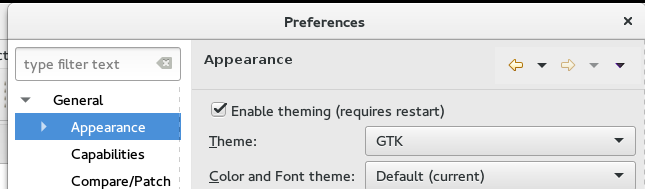

Here are some of the more noteworthy things available in the Neon milestone build M1
which is now available for download.
We also recommend to read the Tips and Tricks, either via Help > Tips and Tricks... or online for
Platform,
JDT, and
PDE.
| Platform | |
| Preference setting to disable the Eclipse styling (CSS based theming) |
You can disable the CSS based styling of the Eclipse IDE through a check box in the Appearance preferences.
This would cause Eclipse to be rendered without any CSS support and delegate everything to the OS in terms of theme colors, shapes etc. Turing the CSS engine of
results in faster interactive performance of the Eclipse IDE. More information can be found in Bug 472707.
 |
| Additional varargs constructor for MessageDialog |
The MessageDialog class has now an additional vararg constructor which simplifies the creation of a dialog.
Previously, you would construct the MesssageDialog for example with the following construct.
new MessageDialog(shell, "MessageDialog", null, "DialogMessage", MessageDialog.NONE, new String[]{ "Button1", "Button2"}, 0);
now you can simply write
new MessageDialog(shell, "MessageDialog", null, "DialogMessage", MessageDialog.NONE, 0, "Button1", "Button2");More information can be found in Bug 472690. |
| Workbench logger supports debug level | Previously, the workbench logger wrote a trace when calling logger#debug, even if the application was not started in debug mode. Now, log entries on the debug level are ignored, if the application is not started with the debug flag (-debug). More information can be found in Bug 469737. |
| Support for @CanExecute of MDirectMenuItem and MDirectToolItem | Previously, methods annotated with @CanExecute were only evaluated on execution for MDirectMenuItems and MDirectToolItems, not on rendering. So if the method annotated with @CanExecute returned false, the rendering was not updated to show the menu/tool item disabled. Now @CanExecute method is also evaluated during rendering, to show the enabled state according to the method result. More information can be found in Bug 465893. |
| Drag and drop for toolbars in Eclipse applications without CSS styling | The Eclipse styling engine allows to configure drag images via CSS. In previous releases applications without this setting would not support drag and drop of toolbars. Eclipse RCP applications without the related CSS styling support now drag and drop of toolbars out of the box. This applies also for applications which disable the CSS based styling. More information can be found in Bug 472761. |
| JDT | |
[ Not available yet ] |
|
| PDE | |
| Product editor "Dependencies" tab renamed to "Content" | To avoid confusing for new users with the "Dependencies" tab in the MANIFEST.MF editor, the "Dependencies" tab in the product editor was renamed to a more descriptive term "Content". More information can be found in Bug 473877. |
[ Not available yet ] |
|